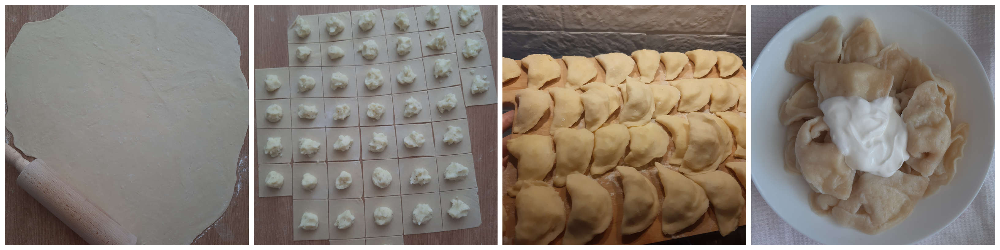

Ingrediente:
-500 g de făină
-o cană călduță de apă
-sare
-2 ouă
-smântână
-cartofi/brânză opțional
1. Amestecăm toate ingredientele până obținem o masă consistentă și moale.
2. Cu ajutorul telului/făcălețului întindem aluatul pe masă până obținem grosimea de 2-3 mm.
3. Tăiem aluatul de-a lungul și după aceasta perpendicular, pentru a obține pătrățele de aluat nu foarte mari, cam de 5-7 cm latura.
4. Punem pe fiecare pătrățel umplutura. Eu am ales cartofi pe care i-am fiert anterior și i-am făcut piure.
5. Îndoim pe diagonală pătrățelul și lipim marginile acestuia.
6. Punem apă la fiert cu puțină sare. Când aceasta începe a fierbe punem pe rând toți colțunașii. Fierbem totul timp de 10-15, până apa dă un clocot.
7. Scurgem apa și clătim colțunașii cu apă rece și turnăm puțin ulei peste aceștia pentru a nu se lipi.
8. Îi servim cu smântână.
Poftă bună, dragii mei! 🤗